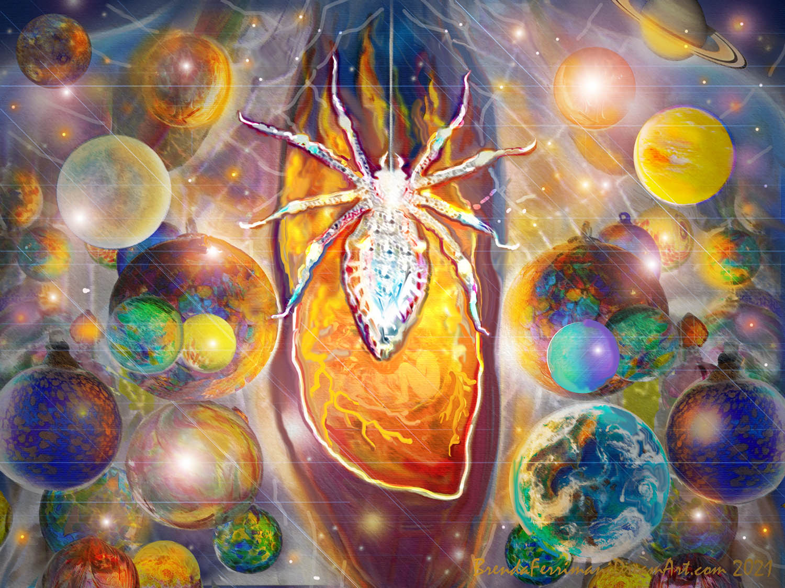

“I am cleaning the ceiling over my glass, celestial orbs. I see spider webs and I try removing them with a cloth. …I thought they were gone but there they are again! I climb up to reach them better. There I see a small white spider moving on a silken thread. The thread extends from the orbs to the mural, across the room, that I painted of a hearth with a fireplace. It glistens above the fire. As I look, it becomes much larger! It’s about the size of my hand! It is moving above the fire and I can see it’s made of jewels – crystals, and diamonds. It’s beautiful!” – Brenda Ferrimani, taken from a dream titled, “Throwing Away the White Spider” Dream Journal entry, Oct. 14th, 2004.
How often do we examine our deepest beliefs? How often do we change them? To change our world view, even our cosmic view, is quite a challenge requiring earnest mind and heart examination. This is truth seeking and deep reflection of the highest order. The planetary consciousness shift we yearn for, that seems necessary for human survival, requires we all become adept Paradigm Shifters.
I was born a truth seeker and my beliefs have always been very important to me. So, I became a Paradigm Shifter from an early age, much to the dismay of my parents and religious community I belonged to. As a young Jehovah’s Witness, I was taught that my religion was “The Truth”. Wow! Imagine being so lucky to have been born into just the right community. That would be like winning the lottery! As I matured the idea that any one person, group, or sacred book could offer all the answers became ridiculous to me.
I couldn’t help constantly questioning, examining my beliefs and the mysteries of the cosmos. Some of the questions that deeply impacted my changes were:
Is God really like humans, with emotions like jealousy, anger and remorse? Why would God make laws that “he” must obey? (Like having to kill his son to save us.) Why does God allow suffering? Why did he change his mind about his creations and allow extinctions to occur, or destroy them in a flood? Did he make a mistake? Are the stories in the Bible true? Is god a male? Why is there a hierarchy with women at the bottom, along with children and animals? I was very disappointed in the answers I got from my religion. I came to see that “truth” is never absolute. I began to favor a bigger picture paradigm that embraces paradox - being OK with not knowing. I adopted some Eastern philosophy into my spiritual view, while hanging on to some teachings of Christianity that encouraged love and compassion.
So, my biggest paradigm shift happened early in young adulthood, which took years to accomplish through cleaning and discarding beliefs that no longer served. Since then, I have examined many beliefs, trying them on, adopting only those that resonate and feel completely authentic to me. For me, LOVE is my NORTH STAR! - my spiritual beliefs must be based on love, and also make sense according to the best information available. I am always open to re-evaluation.
What feels true for me now is a feeling of connectedness to all things, material and invisible. I call the conscious universe we are a part of, Great Dreamer, and I feel deep gratitude for being part of this vast dream. I am also grateful for the jeweled, White Spider of my soul. She’s hard at work developing a new language to express paradigms that must be embraced in the future-words that will unite us, that combine science and spirituality. She’s always working to connect the dots, revealing more sparkling facets of the mystery, strengthening my intuition, and my ability to express through art and writing.
What do your dreams tell you about your beliefs? Have you changed your paradigm lately?
Brenda Ferrimani 7-25, 2021